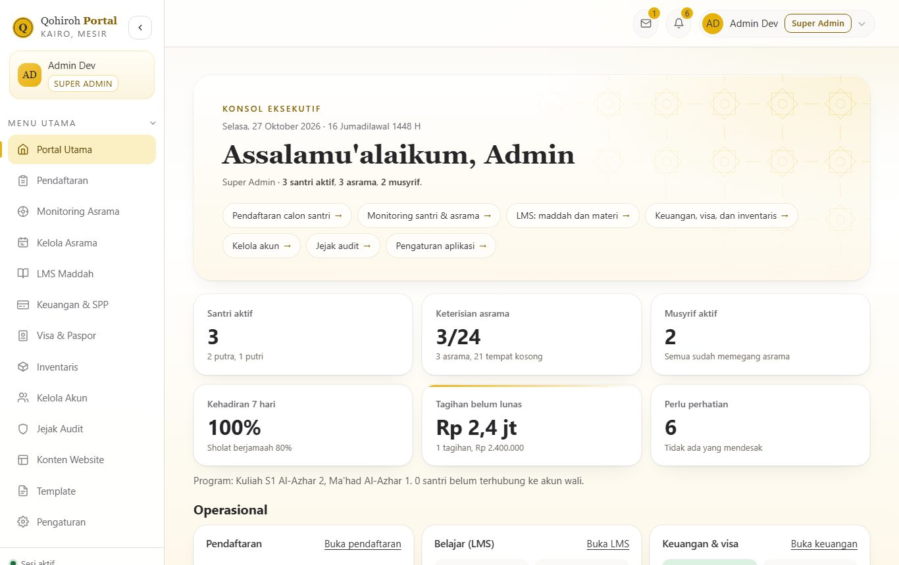
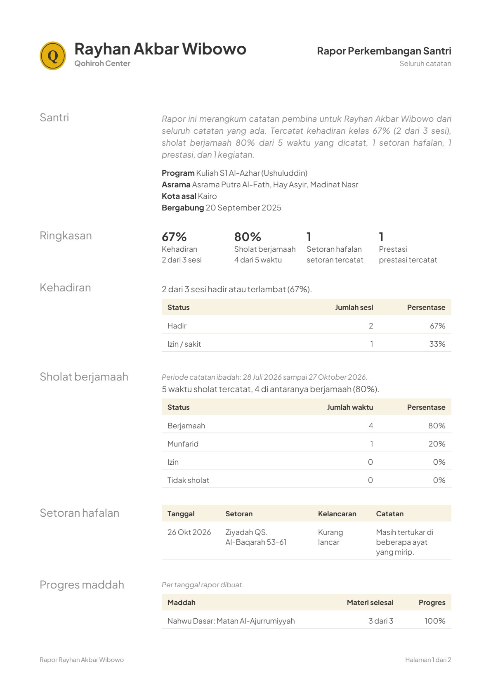
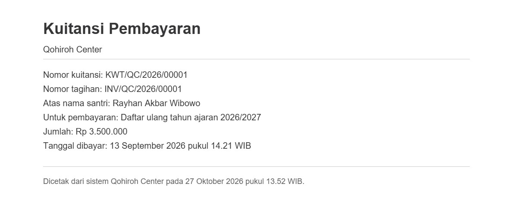

Portal kerja untuk Qohiroh Center
Pendaftaran, asrama, kelas, keuangan, dan kabar untuk wali, di satu tempat.


Setiap peran punya layar sendiri
Pilih peran, lalu pilih fiturnya. Semua gambar adalah tampilan asli, bukan rancangan.
Satu catatan, dilihat oleh yang berhak
Wali, pembina, guru, dan keuangan membuka data yang sama, sesuai perannya.
- Akses sesuai peran
- Wali dan santri hanya membuka data yang terhubung ke akunnya.
- Kata sandi
- Disimpan dalam bentuk acak, bukan apa adanya.
- Dokumen
- Paspor dan ijazah disimpan di penyimpanan privat.
- Riwayat
- Koreksi dan pembatalan tercatat: siapa, dan kapan.
Rapor dan kuitansi langsung jadi PDF
Isinya diambil dari catatan yang sudah ada di sistem. Nama lembaga, rekening, dan penanda tangan diatur sendiri dari menu Template.


Asisten AI yang menjawab dari materi sendiri
Jawabannya hanya dari isi website dan materi pengajar. Pemakaian dibatasi per jam dan per hari, dan asisten tetap menjawab dari jawaban tersimpan bila layanan AI bermasalah.
- Teman belajar santri
- Di tiap pertemuan, santri bisa minta dijelaskan lebih sederhana, minta contoh, atau minta ringkasan.
- Penjawab di website
- Calon santri dan wali bertanya soal program atau biaya. Yang perlu orang diarahkan ke WhatsApp admin.
- Bantu pembina menulis
- Pembina bercerita singkat soal hari itu, AI menyusun catatan per santri, dan pembina mengecek sebelum disimpan.
Siapa membuka apa
Menu yang muncul mengikuti peran akunnya, jadi tidak ada tombol yang berujung penolakan.
| Menu | Pimpinan | Petugas pendaftaran | Pembina asrama | Guru | Keuangan | Wali | Santri |
|---|---|---|---|---|---|---|---|
| Beranda | Ya | Ya | Ya | Ya | Ya | Ya | Ya |
| Pendaftaran | Ya | Ya | Tidak | Tidak | Tidak | Tidak | Tidak |
| Monitoring asrama | Ya | Tidak | Ya | Tidak | Tidak | Tidak | Tidak |
| Kelola asrama | Ya | Tidak | Ya | Tidak | Tidak | Tidak | Tidak |
| Kelas online | Ya | Tidak | Ya | Ya | Tidak | Tidak | Ya |
| Keuangan, visa, inventaris | Ya | Tidak | Tidak | Tidak | Ya | Tidak | Tidak |
| Kelola akun dan jejak audit | Ya | Tidak | Tidak | Tidak | Tidak | Tidak | Tidak |
| Konten website, template, pengaturan | Ya | Tidak | Tidak | Tidak | Tidak | Tidak | Tidak |
Usulan rencana sebulan
Urutannya mengikuti cara sistem ini disiapkan sebelumnya. Waktunya bisa disesuaikan dengan kesiapan Qohiroh Center.
- Minggu pertamaAkun tiap anggota tim, data asrama, pembina, dan santri, serta ringkasan materi untuk asisten belajar.
- Minggu keduaTiap peran dicoba langsung oleh orang yang nanti memakainya, dengan panduan cara pakai.
- Minggu ketigaMateri kelas online pertama diunggah, masukan dicatat, lalu saya perbaiki.
- Minggu keempatKeputusan akhir pimpinan, lalu mulai dipakai bertahap dari satu asrama dulu.
Lima hal yang perlu diputuskan pimpinan
Saya siapkan bahannya, keputusannya tetap di pimpinan Qohiroh Center.
- Data kesehatan
- Kapan dinyalakan. Sebaiknya bersamaan dengan kebijakan privasi yang menyebut data kesehatan dan pemakaian AI.
- Data pendaftar yang batal
- Berapa lama disimpan sebelum dihapus, misalnya 12 bulan.
- Kata sandi sementara
- Perlu masa berlaku atau tidak, dan wajib diganti saat pertama kali masuk atau tidak.
- Uji coba tiap peran
- Satu orang per peran yang mencoba dan mengesahkan hasilnya.
- Pesan ke wali
- Tetap dikirim manual lewat WhatsApp, atau otomatis. Otomatis butuh domain dan pengirim resmi.
Biaya dibahas setelah kebutuhan jelas
Halaman ini tidak memuat angka, karena hitungannya mengikuti bagian yang dipilih.
- Membangun
- Sekali, sesuai bagian yang dipilih dan seberapa banyak yang perlu disesuaikan: nama, logo, warna, istilah, dan data awal.
- Berjalan
- Domain, hosting, dan pemakaian AI. Pemakaian AI dibatasi per jam dan per hari.
- Kepemilikan
- Siapa memegang kode dan data ditetapkan tertulis di awal.
- Dukungan
- Masa perbaikan setelah mulai dipakai disepakati bersama.
Mulai dari obrolan singkat
Ceritakan urusan yang paling ingin dirapikan, lalu saya tunjukkan caranya.
Balas pesan yang mengantar halaman ini untuk menjadwalkan obrolan.